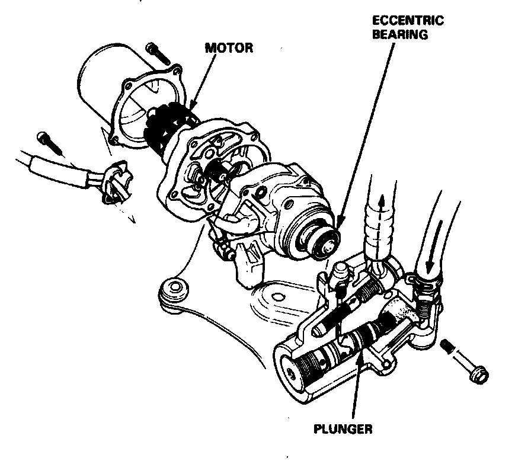

Power Unit

Power Unit
The power unit consists of a motor and a plunger pump. Since an eccentric bearing is positioned on the end of the motor shaft, the rotation of the motor provides the reciprocating motion of the plunger. The brake fluid is thus pressurized and fed to the accumulator.
As the motor rotates more and the pressure in the accumulator exceeds the prescribed level, the pressure switch is turned on. Approx. 3 seconds after receiving the ON signal, the ABS control unit stops the motor relay operation. In this state, the pressure in the accumulator reaches 23,000 kPa (230 kg/cm2, 3,271 psi).
If the pressure doesn't reach the prescribed value after the motor has continuously operated for 120 seconds or more, the ABS control unit stops the motor and activates ABS indicator light.